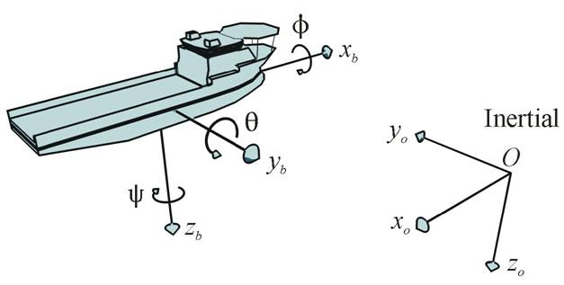

| Marine Visualization Toolbox | |
Marine Visualization Basics
Basic knowledge needed to use the Marine Visualization Toolbox:
The coordinate systems used in MVT follows the convention from (SNAME, 1950). Figure 1 illustrates the positive directions of the inertial frame and the rotation axis of the body fixed vessel frame.
The vessels are translated according to the inertial frame's origo, and the
vessels' body fixed frame are rotated about their local origo. Translation
inputs to MVT are assumed to be the time varying x, y and z-positions relative
to the inertial frame origo, and rotations are assumed to be Euler rotations:
phi, theta and psi, see example in figure 2. Note that the axis directions of
a non rotated body fixed frame is parallel to the inertial frame.

Figure 1. Inertial and body fixed frames.
The six input variables described above are often referred to as the six
degrees of freedom (Fossen, 2002). In MVT such a set of time varying positions
and rotations will be referred to as 6 DOF data. The 6 DOF data in MATLAB are
implemented as double precision arrays, with dimensions
N rows by 6 columns, where N is the number of samples. Each column contains
the values of x(n), y(n), z(n), phi(n), theta(n) and psi(n), where sample
number n = 1, 2, ..., N.

Figure 2. Body fixed frame translated [xn yn zn]
and rotated psin about the z axis.
Structures and arrays in MATLAB
and MVT
In MVT arrays are used as input to and output from functions. MATLAB arrays are analog to mathematical matrices and may be of any dimension, MVT only uses one and two dimensional arrays, a one dimensional array equals a vector.
The 6 DOF data array has dimensions Nx6, the following command examples show how to manipulate and retrieve information from certain columns, rows or the whole array:
Create an 10x6 array of zeros:
my_array = zeros(10,6)
Using the colon operator to address specific columns and rows. First command sets each value in the first column equal to their row number. Second command retrieves the fourth row from the newly created array:
my_array(:,1) = [1:10]'
third_row = my_array(4,:)
third_row = my_array(4,:)
The 6 DOF data array now contain zeros for all vessel variables, except for x-position. From this data we know that the vessel moves straight forward (since psin=0 for all n) from x=1 to x=10. We now have to define a time vector (Nx1 array, a column vector) which identifies the time of each sample in my_array. The following command creates a linear time vector of the same length as the 6 DOF data, with time steps of 0.1 seconds:
time_vector = 0.1 * [1:10]'
The ' operator transposes the row vector to a column vector (see help on :).The time_vector now contain sample time information for the 6 DOF data in my_array. Before you pass these two arrays to a MVT function assign them to a structure (MATLAB struct) by typing:
vessel_struct.x = my_array
vessel_struct.t = time_vector
The structure vessel_struct can now be used as input argument to MVT functions that require 6 DOF data input. And the fields of vessel_struct x and t may be used as ordinary arrays, for example:
vessel_struct.x(:,2) = ones(10,1)
To create a array of structures (in case you have more than one vessel) simply more append entries to the existing structure. Imagine there's a vessel moving from x=10 to x=28 simultaneously as the first vessel moves from x=1 to x=10:
my_second_array = zeros(10,6)
my_second_array(:,1) = [10:2:28]'
my_second_array = zeros(10,6)
vessel_struct(2).t = time_vector
Once 6 DOF data for all your vessels are assigned to
one structure, it might be a good idea to save (see MATLAB save) the
structure for future use, retrieve saved structures with load.
Two components are needed to display a 3D model in MVT. A VRML file describing the properties of the 3D model and a VRML viewer to draw the 3D model onto the screen. Short description of terms in this chapter:
Carey, R. and Bell, G. (1997). The Annoted VRML 2.0 Reference Manual. Addison-Wesley Developers Press.
Fossen, T. I. (2002). Marine Control Systems, Guidance, Navigation and Control of Ships, Rigs and Underwater Vehicles. Marine Cybernetics.
SNAME (1950). Nomenclature for treating the motion of a submerged body through a fluid. Technical Report Bulletin 1-5, Society of Naval Architects and Marine Engineers, New York, USA.
|
Installation | Examples | |